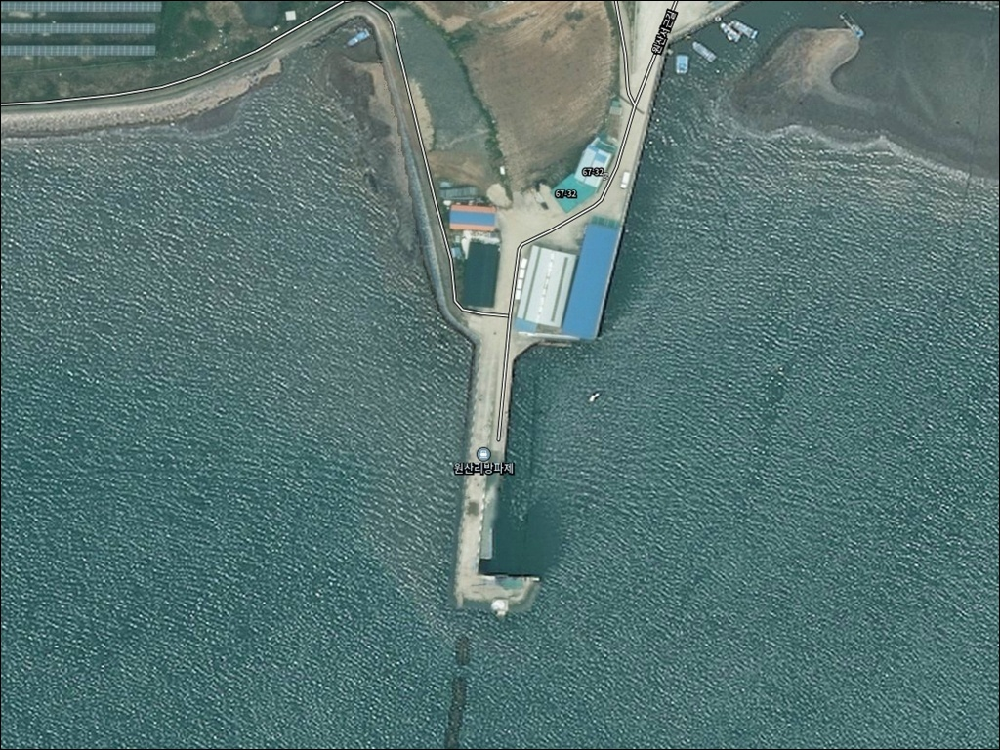
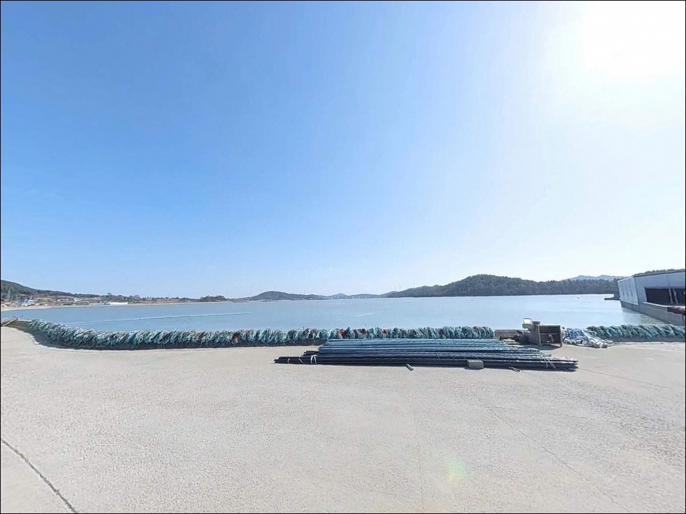
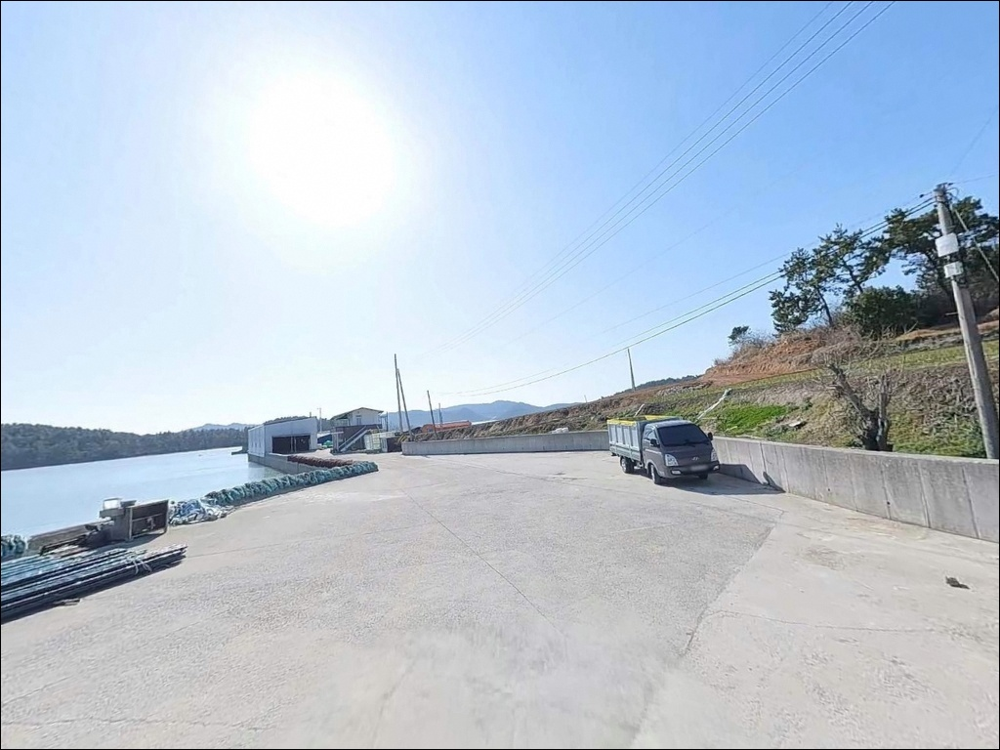
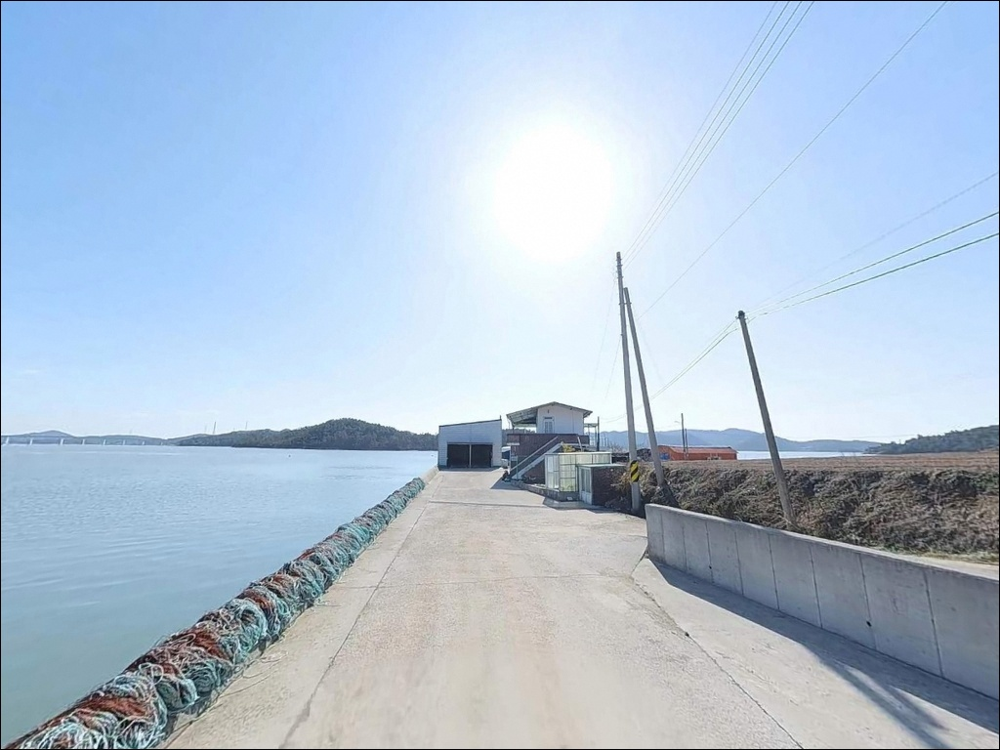
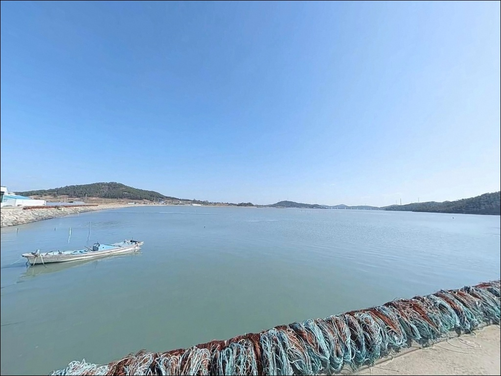
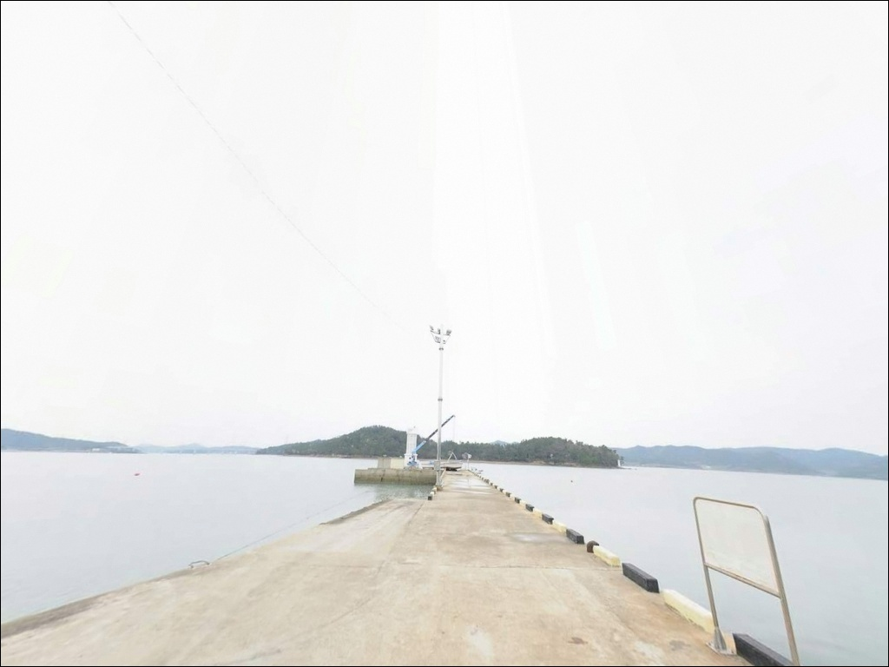
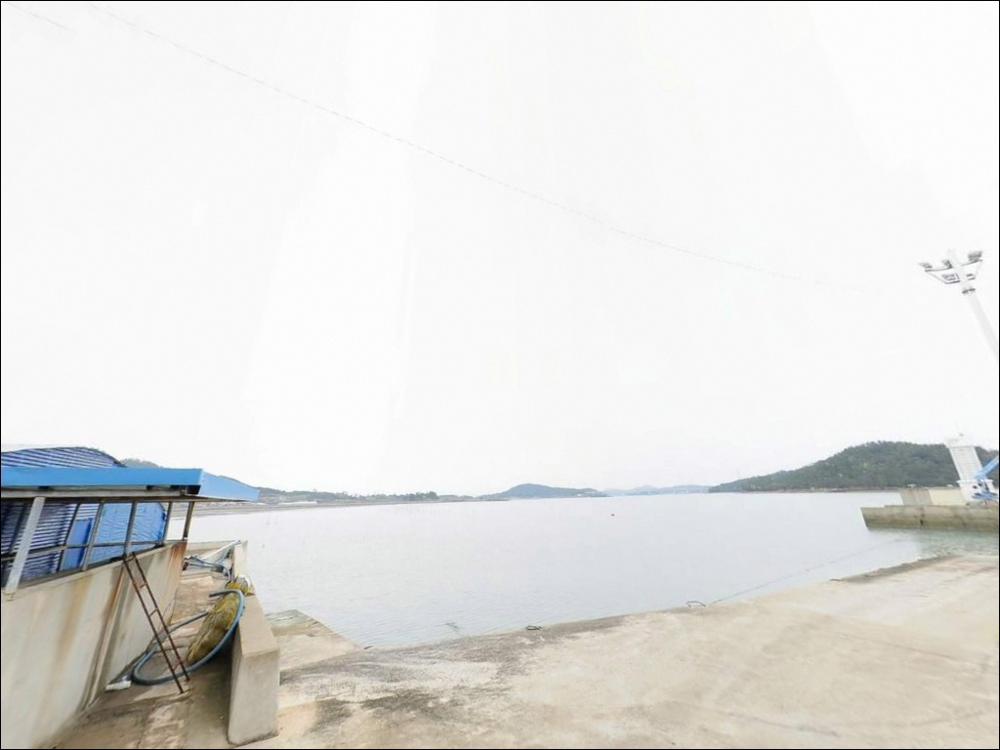
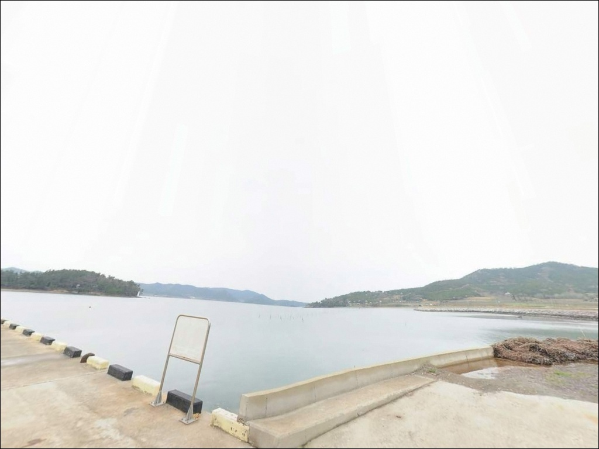
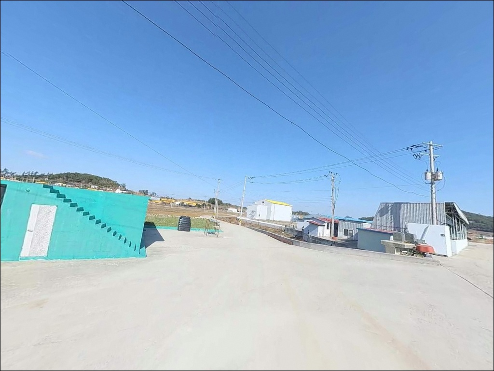

원산리방파제, 팔금도 전남 신안군 잔잔한 물결과 어울리는 차박, 낚시 한적한 포인트
이 페이지에는 광고(제휴 링크 포함)가 있으며, 광고 링크를 통해 구매하면 운영자가 판매 수익 또는 수수료를 받을 수 있습니다. 포인트 사진: 카카오맵 스카이뷰·로드뷰. 이 페이지의 지도·사진 이미지는 카카오맵의 실제 서비스 이미지와 다를 수 있습니다.


포인트 안내
원산리방파제
전남 신안군 팔금면 원산리 803-1
팔금도 원산리방파제를 찾을 때
가장 많이 틀리는 판단은
갈치 시즌과 물때를 함께 계산하지 않고
출발하는 것입니다.
갈치 활성기가 아닌 시기에
조류까지 강하게 흐르는 날이 겹치면,
어떤 채비를 써도
낚시다운 자리 운용이 어려워집니다.
이 글은 원산리방파제의
진입 동선과 지형 구조, 낚시 방식 적합성,
팔금도 권역 플랜 B 동선을 중심으로 정리했습니다.
특정 조황 보장이나 어종 단정은
이 글의 범위에 포함되지 않습니다.

1. 목포에서 원산리까지, 천사대교 경유 진입 동선
원산리방파제가 있는 팔금도는
2019년 4월 천사대교 개통 이후
육로 접근이 가능해진 섬입니다.
목포에서 압해도를 지나 천사대교를 건너
암태도에 진입한 뒤,
중앙대교를 건너면 팔금도에 닿습니다.
원산리는 팔금도 서남단에 위치해 있어
섬 진입 후 내부 도로를 통한
추가 이동이 필요합니다.
팔금도 내부 도로는 마을길 수준으로
폭이 좁은 구간이 혼재하는 편이며,
대형 차량이라면 출발 전 위성지도로
진입로와 회차 공간을 확인하는 것이 안전합니다.
주차는 방파제 입구 공터와
선착장 주변 어구 적치장 옆 공간을
활용하는 방식이 일반적입니다.
소형 어촌 방파제 특성상
차 1~2대 수용 수준의 공간이며,
어선 작업 동선을 막지 않는 자리를
먼저 확인하는 것이 기본 매너입니다.

2. 차박 환경과 야간 체류 여건
팔금도는 신안 다이아몬드제도 4개 섬 중
인구가 가장 적은 섬으로 알려져 있습니다.
야간 차량 통행이 거의 없어
체류 환경은 전반적으로 조용한 편이며,
민가와 거리가 있는 방파제 구조상
프라이버시는 양호한 수준입니다.
가로등 수가 많지 않은 소형 어촌 특성상
방파제 끝단 조명 여건은 제한적인 편입니다.
야간 낚시와 차박을 병행할 경우
헤드랜턴과 예비 배터리는 필수이며,
서남해 다도해 특성상 기상에 따라
바람 영향을 받는 날도 있어
출발 전 풍속 확인이 기본 점검 항목입니다.


3. 주변 편의시설 및 인프라 현황
원산리방파제 반경 3km 이내에는
편의점이나 주유소를 기대하기 어렵습니다.
소형 어촌 마을 특성상
완전 자급 체제로 진입하는 것이
현실적인 준비 방식이며,
식수·얼음·낚시 소품·연료 모두
출발 전에 갖춰야 합니다.
팔금면사무소 인근에는
소규모 식당과 마트가 있어
부족한 물품이 있다면
팔금면 소재지를 경유하는 동선이 유효합니다.
중앙대교를 건너 암태도 방면으로 이동하면
상권 여건이 더 나은 편이라
보급이 필요할 경우
암태도를 경유 거점으로 삼는 방식이 효율적입니다.
응급 상황 발생 시 팔금면 외 권역의 의료시설은
목포권이 가장 가까운 거점으로
거리가 상당합니다.
비상약품 사전 준비는 반드시 갖추고,
팔금면사무소 연락처(061-240-3935)는
출발 전 저장해 두는 편이 좋습니다.

4. 진입 전 반드시 챙겨야 할 준비사항
원산리방파제 방문 전 가장 먼저 확인할 것은
물때와 갈치 시즌입니다.
다도해 수로 지형 특성상
섬 사이 조류가 빠른 편이며,
사리 전후에는 어떤 채비로도
흐름을 버티기 어려운 수준까지 세집니다.
바다타임에서 팔금면 일대 물때를 확인하고
조금 전후 또는 정조 전후를
노려 출발 시각을 맞추는 것이 기본 전략입니다.
갈치 시즌과 물때를 함께 맞춰야
원산리방파제의 조건이 살아납니다.
서남해 다도해 특성상 기상 변화가 빠르므로
출발 당일 아침 기상청 예보를
다시 한번 확인하는 것이
포인트 낭비를 막는 기본 조건입니다.
출조 전 최신 조황은 반드시 직접 검색해 보시기 바랍니다.
"팔금도 낚시 조황", "신안 팔금 방파제 조황"
키워드로 먼저 현황을 파악하고 움직이는 편이 좋습니다.

5. 방파제 외항·내항 구분이 조과를 가르는 조건
원산리방파제는 외항과 내항이 구분되는
길고 넓은 방파제 구조입니다.
방파제 끝단 수심은 5~12m 수준이며,
팔금도 서남단 위치 특성상
다도해 수로에서 흘러드는 조류 흐름이
외항 방향에 직접 영향을 줍니다.
외항 방향은 조류 흐름이 살아 있어
원투낚시와 에깅 채비가
힘을 발휘할 수 있는 조건입니다.
내항 방향은 상대적으로 잔잔하여
찌낚시나 라이트게임처럼
채비를 안정적으로 운용해야 하는
방식에 어울리는 환경입니다.
팔금도 원산리방파제는
인근 암태도·안좌도와 묶어 움직일 때
출조 효율이 올라가는 포인트입니다.
단독 목적지보다 권역 탐색 동선의
첫 번째 기점으로 잡는 방식이
이 포인트를 효율적으로 활용하는 방법입니다.


6. 원산리방파제에 어울리는 낚시 스타일
이 포인트에서 가장 잘 알려진 낚시는
갈치낚시입니다.
방파제 외항 방향으로 조류 흐름이 살아 있는
여름~가을 야간 타이밍이
갈치 활성도와 맞물리는 구조이며,
7월부터 11월이 주요 시즌입니다.
원투낚시는 방파제 끝단 수심 구간을
바닥 탐색하는 방식으로 운용합니다.
조류가 느려지는 정조 타이밍에
채비를 멀리 보내
붕장어·우럭 계열을 기대해볼 수 있는
지형 조건이 갖춰져 있습니다.
에깅과 루어낚시도 이 포인트에 어울립니다.
신안 다도해권 특성상
갑오징어·주꾸미 시즌과 맞물리는 시기에는
외항 방향으로 에깅을 시도해볼 수 있으며,
내항 주변 구조물을 탐색하는
볼락 라이트게임도 야간에 유효한 방식입니다.

7. 원산리방파제가 여의치 않을 때 이동할 대안 포인트
조황이 기대에 못 미치거나
주차 여건이 여의치 않을 때는
중앙대교를 건너 암태도 방면이
첫 번째 대안입니다.
암태도에는 복수의 방파제와 선착장이 있어
낚시 스타일에 맞게 자리를 고를 수 있으며,
팔금도보다 인프라 여건이 양호해
대기 중 보급도 수월합니다.
안좌도 읍동리 방파제는
신안1교 경유로 연결되는 포인트로,
감성돔과 루어낚시 여건을 갖춘
비교적 검증된 섬 방파제입니다.
원산리방파제와 동일한
서남해 다도해권 지형 특성을 공유해
유사한 채비와 방식으로 운용할 수 있습니다.
차박 대안으로는 자은도 분계해수욕장 인근이
신안 중부권에서 해변 인접 공간으로
비교적 알려진 곳입니다.
원산리방파제를 첫 번째 기점으로 잡고
암태도·안좌도를 플랜 B로 묶어
이동하는 방식이 이 권역에서
가장 효율적인 동선입니다.

팔금도 원산리방파제,
조용한 탐색 낚시로
기억에 남는 포인트
갈치 시즌과 물때를 맞추고
자급 준비를 갖춘 낚시인이라면,
원산리방파제는 여유 있는 방파제 낚시를
즐길 수 있는 구조입니다.
온라인 자료가 많지 않은 포인트인 만큼
먼저 답사해 두면
나만의 포인트로 자리 잡을 가능성이 있는 곳이기도 합니다.
단독 출조보다는
암태도·안좌도를 함께 묶어
이동하는 방식이 이 권역을
효율적으로 돌아보는 방법입니다.
진입로 사전 확인과 완전 자급 준비,
그리고 갈치 시즌과 물때 타이밍 계산이
이 출조의 성패를 가르는 기준입니다.
방파제 옆에 조용히 차를 세우고
다도해 물골 소리를 들으며 하룻밤 머무는
차박 여행자라면,
자급 준비와 진입로 확인만 갖추면
낚시와 차박을 동시에 즐기기 좋은
조용한 출조가 될 수 있는 곳입니다.